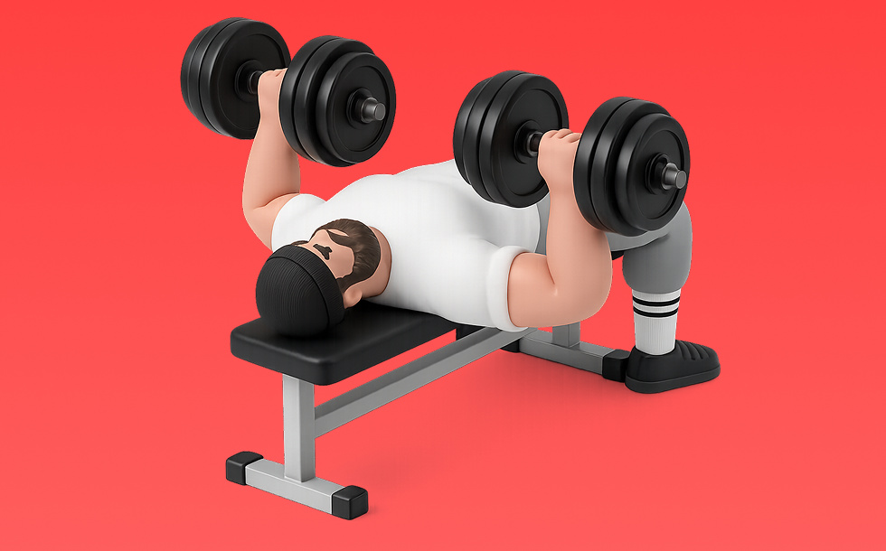

Dumbbell Bench Press

Use dumbbells to press. Lower to the chest and press up. Targets pecs, front delts, and triceps; easy to fix left–right imbalances. Build chest size and pressing strength.
- Primary Muscle Group
- Chest
- Detailed Muscles
- Pectorals / Front delts / Triceps
- Equipment
- Dumbbell
- Also Known As
- DBベンチ / db bench press
YouTube Videos
-
How To Do Dumbbell Bench Press Correctly
-
Dumbbell Bench Press - Modern Woman's Guide to Strength Training
-
Dumbbell Bench Press - Perfect Form Video Tutorial
-
STOP Doing Dumbbell Press Like This (5 Mistakes Slowing Your Chest Gains)
-
Dumbbell Bench Press (proper form and variations)
-
HOW TO DUMBBELL BENCH PRESS | Coach Kelly Cues
-
Stop Doing Dumbbell Presses Like This! (7 KEY MISTAKES)
-
How To: Dumbbell Chest Press
-
Stop Doing Dumbbell Bench Press Like This (I'M BEGGING YOU!)
-
How to Dumbbell Flat Bench Press | Form Tutorial
-
Dumbbell Bench Press (BETTER CHEST ACTIVATION!)
-
The ONLY Way You Should Be Doing Flat Dumbbell Bench Press!
-
How To Dumbbell Chest Press PROPERLY | Fix Your DB Bench Press
-
How to do the INCLINE DUMBBELL BENCH PRESS! | 2 Minute Tutorial
YouTube Shorts
-
Best Dumbbell Bench Press Tutorial Ever Made
-
How to do a Flat Dumbbell Chest Press!
-
FIX Your Dumbbell Bench Press (DO THIS INSTEAD!)
-
✅ The PERFECT Dumbbell Chest Press
-
How to Properly Perform the Flat Dumbbell Chest Press With Good Form (Exercise Demonstration)
-
The PERFECT Incline Dumbbell Chest Press
-
🔥 The Best Dumbbell Bench Press Tutorial You’ll Ever Watch
-
The Most Overlooked Part of Dumbbell Bench Press
-
Sam Sulek's Dumbbell Bench Press Workout Form Tip 💯 #samsulek #samsulekshorts
-
Dumbell Chest Press Mistakes (DON'T DO THIS!)
-
How to do flat dumbbell bench press
-
STOP Doing Dumbbell Press Like This
-
How to do a Dumbbell Incline Chest Press!
-
How to Dumbbell Bench Press Properly
-
Don’t Do Dumbbell Chest Press Like This! ❌ | Fix Your Form for a Bigger, Safer Chest 💪
-
Correct Dumbbell Floor Press Form - Floor bench press #fitness #benchpress
-
Perfect Bench Press Form (DO THIS!)
-
Inclined Dumbell Press | Jeet Selal
-
How To Bench Press With Perfect Technique (5 Steps)
-
BACK TO THE BASICS | Dumbbell Bench Press
-
How to Dumbbell Bench Press Correctly
-
How To Set Up A HEAVY Dumbbell Bench Press
-
How to get heavy dumbbells into position for dumbbell bench press #dumbbell
-
9 Powerfull Dumbbell Chest Workout to Transform Upper Body| #workout #chestworkout
-
How To Do a Proper Incline Dumbbell Press
-
Stop Doing Barbell Bench Press!
-
Dumbbell Bench Press Mistake (KILLING GAINS!)
-
Incline DB Bench 🔥 BEST Guide Ever Made
-
Seated Dumbbell Shoulder Press
-
Key tips for a strong and safe dumbbell incline press
-
3 Tips for the PERFECT Shoulder Press
-
explode your chest gains with this cue!
-
📌Top 4 best chest exercises with dumbbell 🔥 #chest #chestworkout #chestday #chestexercises
-
Perfect Your Seated Dumbbell Shoulder Press
-
Build a Powerful Chest: Best Dumbbell Chest Workouts for Massive Gains!
-
FIX THESE Dumbbell Chest Fly Mistakes!
How to Perform
- Set a stable position and brace your torso.
- Press with control without using momentum.
- Lower under control while keeping range of motion.
Form Tips
- Do not shrug your shoulders
- Keep wrists neutral
- Avoid excessive momentum
Pro Tips
- Prioritize form and range of motion before adding load.
- If shoulders feel uncomfortable, reduce load and range.
Rep Guide
General guidelines. Adjust based on your goal, experience, and condition.
- Strength: 1-5 reps
- Hypertrophy: 6-12 reps
- Endurance: 13-20 reps
Get the app
Log your trainingand workoutsin Biggr.Start for freeright now.